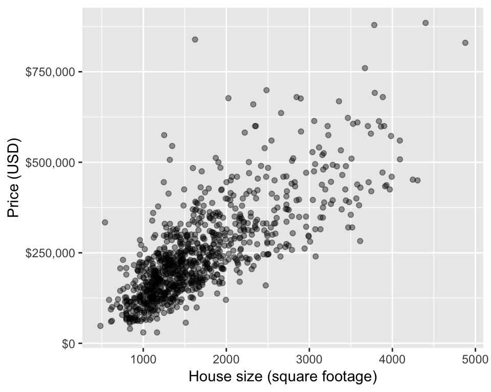

Chapter 8 Introduction to regression through K-nearest neighbours
8.1 Overview
Introduction to regression using K-nearest neighbours (k-nn). We will focus on prediction in cases where there is a response variable of interest and a single explanatory variable.
8.2 Learning objectives
By the end of the chapter, students will be able to:
- Recognize situations where a simple regression analysis would be appropriate for making predictions.
- Explain the k-nearest neighbour (k-nn) regression algorithm and describe how it differs from k-nn classification.
- Interpret the output of a k-nn regression.
- In a dataset with two variables, perform k-nearest neighbour regression in R using
caret::knnregTrain()to predict the values for a test dataset. - Using R, execute cross-validation in R to choose the number of neighbours.
- Using R, evaluate k-nn regression prediction accuracy using a test data set and an appropriate metric (e.g., means square prediction error).
- Describe advantages and disadvantages of the k-nearest neighbour regression approach.
8.3 Regression
We can use regression as a method to answer a very similar question to classification (e.g., use past information to predict future values) but in the case of regression the what we want to predict are not class labels, but instead numerical values. An example regression prediction question would be can we use hours spent on exercise each week to predict marathon race time? Another example regression prediction question, that we’ll explore in the text book, is can we use house square footage to predict house sale price? For this question we will use a data set from Sacremento that is part of the caret package.
8.4 Sacremento real estate example
Let’s start by loading the libraries we need and previewing the data set. The data set comes with the caret package, so as soon as we load the caret library and type data(Sacramento) we are able to access it as a data frame named Sacramento.
library(tidyverse)
library(forcats)
library(caret)
data(Sacramento)
head(Sacramento)## city zip beds baths sqft type price latitude longitude
## 1 SACRAMENTO z95838 2 1 836 Residential 59222 38.63191 -121.4349
## 2 SACRAMENTO z95823 3 1 1167 Residential 68212 38.47890 -121.4310
## 3 SACRAMENTO z95815 2 1 796 Residential 68880 38.61830 -121.4438
## 4 SACRAMENTO z95815 2 1 852 Residential 69307 38.61684 -121.4391
## 5 SACRAMENTO z95824 2 1 797 Residential 81900 38.51947 -121.4358
## 6 SACRAMENTO z95841 3 1 1122 Condo 89921 38.66260 -121.3278Next look at the data in a plot where we place the predictor/explanatory variable on the x-axis and the target/response variable on the y-axis (this is what we would like to predict):
eda <- ggplot(Sacramento, aes(x = sqft, y = price)) +
geom_point() +
xlab("House size (square footage)") +
ylab("Price (USD)")
eda
From looking at the visualization above, we see that as house size (square footage) increases, so does house price. Thus, we can reason that house size might be a useful predictor of house price and we can use the size of the house to predict a house price for a home that has not yet sold (and consequently we do not know the house price).